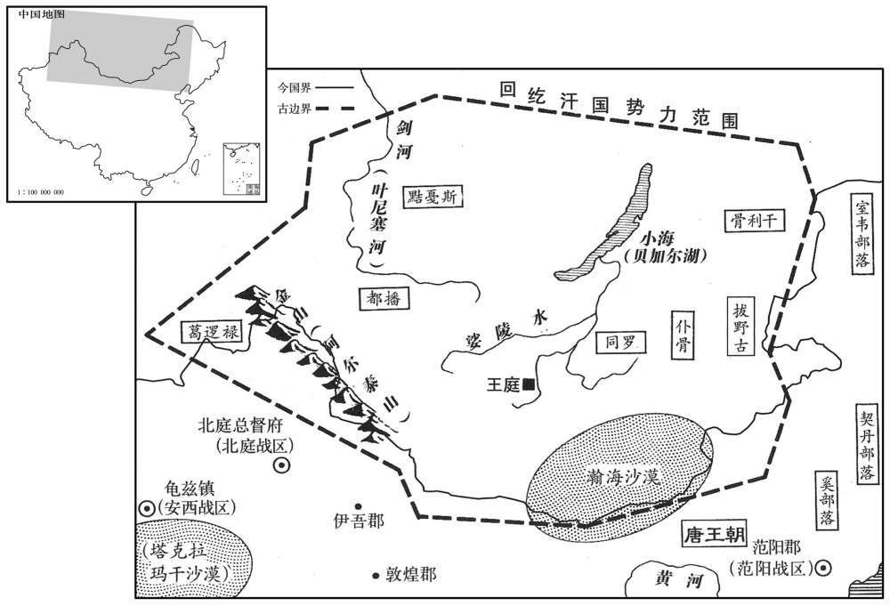

公元745年资治通鉴：本年记事、原文与白话对照
按原书编年位置阅读；追叙和史论不等于本年发生的事件。白话采用所据译本，缺译不以生成译文补齐。
卷215 · 本年记事
公元745年 · 唐玄宗至道大圣大明孝皇帝天宝四载
四载〔（乙酉，七四五）〕
上传原文的注释括号有异常，字符原样保留；无法可靠划分的段落默认全文显示。
本年事件索引（现代整理）

本年形势与背景参考图
春，正月，庚午，上谓宰相曰：「朕比以甲子，〔比，毗至翻。〕于宫中为坛，为百姓祈福，朕自草黄素置案上，俄飞升天，闻空中语云：『圣寿延长。』又朕于嵩山炼药成，亦置坛上，及夜，左右欲收之，又闻空中与云：『药未须收，此自守护。』达曙乃收之。」太子、诸王、宰相，皆上表贺。〔史言唐之君诞妄而臣佞谀。〕
本段缺少可靠对应白话，原文完整保留；未使用生成译文。
回纥怀仁可汗击突厥白眉可汗，杀之，传首京师。突厥毗伽可敦帅众来降。〔可，从刊入声。帅，读曰率。降，户江翻。〕于是北边晏然，烽燧无警矣。
本段缺少可靠对应白话，原文完整保留；未使用生成译文。
回纥斥地愈广，东际室韦，西抵金山，南跨大漠，尽有突厥故地。〔史言回纥至此强盛。〕怀仁卒，子磨延啜立，号葛勒可汗。
本段缺少可靠对应白话，原文完整保留；未使用生成译文。
二月，己酉，以朔方节度使王忠嗣兼河东节度使。忠嗣少勇敢自负，〔少，诗照翻。〕及镇方面，专以持重安边为务，常曰：「太平之将，但当抚循训练士卒而已，不可疲中国之力以邀功名。」〔将，即亮翻。〕有漆弓百五十斤，常贮之櫜中，以示不用。〔贮，丁吕翻。〕军中日夜思战，忠嗣多遣谍人伺其间隙，〔谍，达协翻。伺，相吏翻。间，古苋翻。间，古苋翻。〕见可胜，然后兴师，故出必有功。既兼两道节制，自朔方至云中，边陲数千里，〔陲，音垂。〕要害之地，悉列置城堡，斥地各数百里。边人以为自张仁亶之后，将帅皆不及。〔张仁愿，本名仁亶，以睿宗讳旦，音近亶，避之，改名仁愿。将，即亮翻。帅，所类翻。〕
本段缺少可靠对应白话，原文完整保留；未使用生成译文。
三月，壬申，上以外孙独孤氏为静乐公主，嫁契丹王李怀节；〔乐，音洛。〕甥杨氏为宜芳公主，嫁奚王李延宠。〔宜芳县，属岚州。〕
本段缺少可靠对应白话，原文完整保留；未使用生成译文。
乙巳，以刑部上书裴敦复充岭南五府经略等使。五月，壬申，敦复坐逗留不之官，贬淄川太守，〔淄川郡淄州，京师东北二千一百三十三里。守，式又翻。〕以光禄少卿彭果〔【章：十二行本「果」作「杲」；乙十一行同本同；孔本同。」】〕代之。上嘉敦复平海贼之功，故李林甫陷之。
本段缺少可靠对应白话，原文完整保留；未使用生成译文。
李适之与李林甫争权有隙。适之领兵部尚书，驸马张垍为侍郎，〔垍其冀翻。〕林甫亦恶之，〔恶，乌路翻。〕使人发兵部铨曹奸利事，收吏六十余人付京兆与御史对鞫之，数日，竟不得其情。京兆尹萧炅使法曹吉温鞫之。〔法曹司法参军事，掌鞫狱丽法，知赃贿没入。炅，火迥翻。〕温入院，置兵部吏于外，先于后厅取二重囚讯之，或仗或压，号呼之声，所不忍闻；〔号，户高翻。〕皆曰：「茍存余生，乞纸尽答。」兵部吏素闻温之惨酷，引入，皆自诬服，无敢违温意者。顷刻而狱成，验囚无榜掠之迹。〔榜，音彭。掠，音亮。〕六月，辛亥，敕诮责前后铨侍郎及判南曹郎官而宥之。〔交宗开成二年，宰相李石奏长赜选格，吏部请加置南曹郎中一人，别置印，以「新置南曹之印」为文。盖吏部先以郎官判南曹，开成间因置南曹郎也。宋白曰：南曹起于总章二年，司列常伯李敬玄奏置。未置已前，铨中自勘责。故事，两转厅；至建中元年，侍郎邵说奏挟阙替南曹郎中王鋗已后，遂不转厅；贞元十一年，侍郎杜黄裳请准旧例转厅，后云云，同上。诮，才笑翻。〕顼，均之兄；温，吉顼进用于武后之时。
本段缺少可靠对应白话，原文完整保留；未使用生成译文。
温始为新丰丞，太子文学薛嶷荐温才，〔唐六典曰：魏置太子文学。魏武为丞相，命司马宣王为文学掾，甚为世子所信，与吴质、朱铄、陈群为太子四友。自晋之后不置。至后周建德三年，置太子文学十人，后废。唐显庆中，始置太子文学二人，属司经局，掌分知经籍，侍奉文章，总缉经籍；缮写装染之功，笔札给用之数，皆料度之。嶷，鱼力翻。〕上召见，〔见，贤遍翻。〕顾嶷曰：「是一不良人，朕不用也。」
本段缺少可靠对应白话，原文完整保留；未使用生成译文。
萧炅为河南尹，尝坐事，西台遣温往按之，〔西台，西京御史台也。〕温治炅甚急。〔治，直之翻；下同。〕及温为万年丞，未几，炅为京兆尹。〔几，居岂翻。〕温素与高力士相结，力士自禁中归，温度炅必往谢官，〔度，徒洛翻。〕乃先诣力士，与之谈谑，握手甚欢，〔谑，迄却翻。〕炅后至，温阳为惊避；力士呼曰：「吉七不须避。」〔吉温，第七。〕谓炅曰：「此亦吾故人也。」召还，与炅坐。炅接之甚恭，不敢以前事为怨。他日，温谒炅曰：「曩者温不敢隳国家法，自今请洗心事公。」炅遂与尽欢，引为法曹。〔考异曰：唐历云：「温联按大狱，倚法附邪，以出入人命者凡十余年。性巧诋，忍而不忌，失意眉睫者，必引而陷之；其欲胶固之，虽王公大人，立可亲也。初，萧炅以赃下狱，温深竟其罪。后为万年县丞，炅拜京兆尹。温见炅于高力士第，乃与之相结，为胶漆之交，引为法曹，而荐于林甫；温之进也反以炅力。」旧传云：「炅为河南尹，有事，京台差温推诘，坚持不舍。及温选，炅已为京兆尹，一唱万年尉，即就其官，人为危之。」今参取二书用之。〕
本段缺少可靠对应白话，原文完整保留；未使用生成译文。
及林甫欲除不附己者，求治狱吏，炅荐温于林甫；林甫得之，大喜。温常曰：「若遇知己，南山白额虎不足缚也。」时又有杭州人罗西奭，为吏深刻，林甫引之，自御史台主簿再迁殿中侍史。〔唐御史台主簿，从七品上，掌印及受事发辰，勾检稽失，兼知官厨及黄卷。〕二人皆随林甫所欲深浅，锻炼成狱，无能自脱者，时人谓之「罗钳吉网」。〔以铁劫束物曰钳。钳，其廉翻。〕
本段缺少可靠对应白话，原文完整保留；未使用生成译文。
秋，七月，壬午，册韦昭训女为寿王妃。
本段缺少可靠对应白话，原文完整保留；未使用生成译文。
八月，壬寅，册杨太真为贵妃；〔考异曰：统纪：「八月册女道士杨氏为贵妃。」本纪「甲辰」，唐历「甲寅」。今据实录，「壬寅赠太真妃父玄琰等官。」甲辰，甲寅皆在后，恐册妃在赠官前。新本纪亦云「八月壬寅立太真为贵妃」，今从之。〕赠其父玄琰兵部尚书，以其叔父玄珪为光禄卿，从兄铦为殿中少监，锜为驸马都尉。〔从，才用翻；下之从同。铦，息廉翻。锜，渠绮翻，又鱼绮翻，又音奇。〕癸卯，册武惠妃女为太华公主，命锜，尚之。〔考异曰：实录、旧传皆以铦、锜为再从兄，国忠为从祖兄，然则从祖亦再从也。推恩之时，何以及铦、锜而不及国忠﹖新传谓之宗兄。唐历以铦为玄琰之子。借使非子，比于国忠必应稍亲；今但谓之从兄。旧传云：锜为侍御史。今从实录。〕及贵妃三姊，皆赐第京师，宠贵赫然。
本段缺少可靠对应白话，原文完整保留；未使用生成译文。
杨钊，贵妃之从祖兄也，不学无行，〔钊，音昭。行，下孟翻。〕为宗党所鄙。从军于蜀，得新都尉；考满，家贫不能自归，新政富民鲜于仲通常资给之。〔新都县，汉属广汉郡，梁置始康郡，西魏废那。隋开皇十八年改新都曰兴乐，寻废县，唐初复置，属蜀郡；武德四年分南部、相如二县，置新城县，寻避隐太子名，改曰新政，时属阆中郡。〕杨玄琰卒于蜀，〔卒，子恤翻。〕钊往来其家，遂与其中女通。〔中，读曰仲。〕
本段缺少可靠对应白话，原文完整保留；未使用生成译文。
鲜于仲通名向，以字行，颇读书，有材智，剑南度使章仇兼琼引为采访支使，〔考异曰：唐历云：「为节度巡官。」按颜真卿所作仲通碑见存，云「为采访支使」，今从之。唐采访、节度等使幕属有判官、有支使、有掌书记、推官、巡官、衙推等。宋朝始定制，书记、支使不得并置，有出身者为书记，无出身者为支使。〕委以心腹。尝从容谓仲通曰：「今吾独为上所厚，茍无内援，必为李林甫所危。闻杨贵妃新得幸，人未敢附之。子能为我至长安与其家相结，吾无患矣。」仲通曰：「仲通蜀人，未尝游上国，恐败工事。今为公更求得一人。」因言钊本末。兼琼引见钊，仪观丰伟，言辞敏给；〔从，千容翻。为，于伪翻。败，补迈翻。观，古玩翻。〕兼琼大喜，即辟为推官，往来浸亲密。乃使人献春绨于京师，将别，将别，谓曰：「有少物在郫，〔少，诗沼翻。郫县自汉以来属蜀郡。九域志，郫县在成都甫西四十五里。师古曰：郫，音疲。〕以具一日之粮，子过，可取之。」钊至郫，兼琼使亲信大赍蜀货精美者遗之，〔遗，于季翻。〕可直万缗。钊大喜过望，昼夜兼行，至长安，历抵诸妹，以蜀货遗之，曰：「此章仇公所赠也。」时中女新寡，钊遂馆于其室，中分蜀货以与之。于是诸杨日夜誉兼琼；且言钊善樗蒲，引之见上，〔馆，古玩翻。誉，音余。见，贤遍翻。〕得随供奉官出入禁中，〔唐制：中书、门下省官皆供奉官。外官得随朝士入见者谓之仗内供奉，随翰林院官班者谓之翰林供奉，宧官谓之内供奉；又有朝士供奉禁中者。〕改金吾兵曹参军。
本段缺少可靠对应白话，原文完整保留；未使用生成译文。
九月，癸未，以陕郡太守、江淮租庸转运使韦坚为刑部尚书，罢其诸使，以御史中丞杨慎矜代之。〔陕，失冉翻。使，疏吏翻。考异曰：旧食货志，「三载，以杨钊为水陆运使」；误也。今从实录。〕坚妻姜氏，皎之女，林甫之舅子也，故林甫昵之。〔昵，尼质翻。」及坚以通漕有宠于上，遂有入相之志，〔相，息亮翻。〕又与李适之善；林甫由是恶之，〔恶，乌路翻。〕故迁以美官，实夺之权也。
本段缺少可靠对应白话，原文完整保留；未使用生成译文。
安禄山欲以边功市宠，数侵掠奚、契丹；奚、契丹各杀公主以叛，〔数，所角翻；下欲数、数征同。所杀者盖即静乐、宜芳也。〕禄山讨破之。
本段缺少可靠对应白话，原文完整保留；未使用生成译文。
陇右节度使皇甫惟明与吐蕃于石堡城，为虏所败，副将褚桙战死。〔败，补迈翻。桙，直廉翻。考异曰：新传作「诸葛翊」。今从实录。〕
本段缺少可靠对应白话，原文完整保留；未使用生成译文。
冬，十月，甲午，安禄山奏：「臣讨契丹至北平郡，〔北平郡，平州。〕梦先朝名将李靖、李绩从臣求食。」〔朝，直遥翻。将，即亮翻；下同。〕遂命立庙。又奏荐奠之日，庙梁产芝。〔通鉴不语怪，而书安禄山飞鸟食蝗、庙梁产芝之事，以着禄山之欺罔，明皇之昏蔽。〕
本段缺少可靠对应白话，原文完整保留；未使用生成译文。
丁酉，上幸骊山温泉。
本段缺少可靠对应白话，原文完整保留；未使用生成译文。
以上户部郎中王鉷为户色役使，敕赐百姓复除。〔鉷，户公翻。使，疏吏翻。复，方目翻。〕鉷奏征其辇运之费，广张钱数，又使市本郡轻货，百姓所输乃甚于不复除。旧制，戌边者免其租庸，六岁而更。〔更，工衡翻。〕时边将耻败，士卒死者皆不申牒，贯籍不除。〔贯籍，本贯之籍也。〕王鉷志在聚敛，〔敛，力赡翻。〕以有籍无人者皆为避课，按籍戌边六岁之外，惠征其租庸，有并征三十年者，民无所诉。上在位久，用度日侈，后宫赏赐无节，不欲数于左、右藏取之。〔唐有左藏、右藏。藏，徂浪翻。〕鉷探知上指，岁贡额外钱〔【章：十二行本「钱」下有「帛」字；乙十一行本同；张校同，云无注本亦无。】〕百亿万，贮于内库，以供宫中宴赐，曰：「此皆不出于租庸调，无预经费。」〔贮，丁吕翻。调，徒吊翻。〕上以鉷为能富国，益厚遇之。鉷务为割剥以求媚，中外嗟怨。丙子，以鉷为御史中丞、京畿采访使。
本段缺少可靠对应白话，原文完整保留；未使用生成译文。
杨钊侍宴禁中，专掌樗蒲文簿，钩校精密。上赏其强明，曰「好度支郎」。〔唐度支郎掌判天下租赋多少之数，物产丰约之宜，水陆道涂之利，每岁计其所出而度其所用，转运、送敛、送纳皆准程而节其迟速，凡和籴、和市皆量其贵贱，均天下之货以利于人，凡金银、宝货、绫罗之属，皆折庸调以造，凡天下舟车水陆载运，皆具为脚直轻重、贵贱、平易、险枧而为之制。凡天下边军有支度使，以计军资粮仗之用，每岁所费皆申度支会计，以长行旨为准。度，徒洛翻。〕诸杨数征此言于上，〔征，读曰证。〕又以属王鉷，鉷因奏充判官。〔属，之欲翻。〕
本段缺少可靠对应白话，原文完整保留；未使用生成译文。
十二月，戊戌，上还宫。〔还自温泉宫。还，从宣翻，又音如字。〕
本段缺少可靠对应白话，原文完整保留；未使用生成译文。